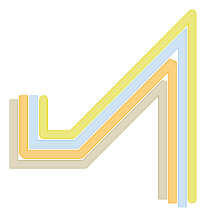
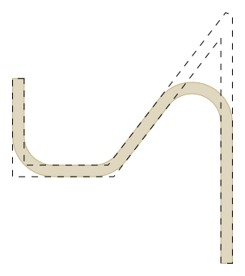
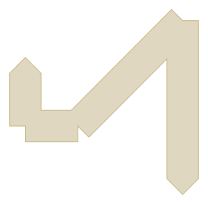
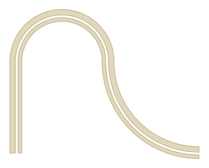
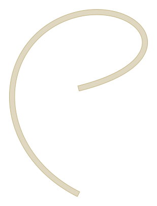
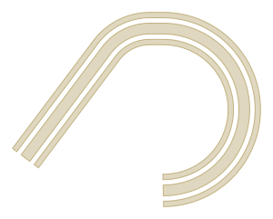
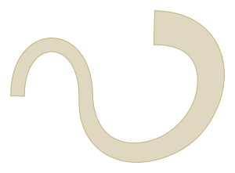
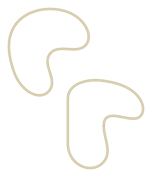
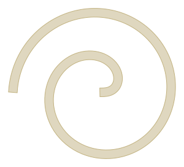

gdstk.FlexPath¶
-
class
gdstk.FlexPath(points, width, offset=0, joins='natural', ends='flush', bend_radius=0, bend_function=None, tolerance=0.01, gdsii_path=False, scale_width=True, layer=0, datatype=0)¶ Flexible path creation.
FlexPath can be used to create single and multiple parallel paths with controlled widths and offsets. Joins and end caps can be customized freely and, if desired, bends can be automatically created to join path segments continuously.
Adjacent sections are expected to be joined smoothly when at least one of them is curved. If that condition cannot be met,
gdstk.RobustPathshould be used instead.- Parameters
points – Single point or sequence of points that make up the path. Each point can be a pair of coordinates or a complex value.
width (number or sequence) – Width of the paths. If this is a sequence, its length defines the number of paths created.
offset (number or sequence) – If this is a number, it is treated as the distance between centers of adjacent paths. If it is a sequence, each number represents the absolute offset from the center of the path.
joins – Definition for the joins. One of “natural”, “miter”, “bevel”, “round”, “smooth”, or a callable. A callable must accept 6 arguments (end point and direction vector for each edge adjacent to the join, the center of the join, and the path width) and return a sequence of points that define the join shape.
ends – Definition for the end caps. One of “flush”, “extended”, “round”, “smooth”, a 2-tuple, or a callable. A 2-tuple defines the extension length on both ends of the path. A callable must accept 4 arguments (cap end point and direction for both path sides) and return a sequence of points that define the cap shape.
bend_radius (number or sequence) – If a positive number, path segments are joined by a bend shape (defaults to a circular arc) when possible.
bend_function (callable) – A callable that takes 4 arguments (radius, initial and final angles, and the bend center) and returns a sequence of points defining the bend shape.
tolerance – Tolerance used for calculating the polygonal approximation of the paths.
gdsii_path – If
True, the paths will be stored as GDSII path elements. They require less memory, but do not support “smooth” or callable joins and end caps, or width changes along the path.scale_width – If
False, the path widths are not scaled when transforming this path.layer – GDSII layer number assigned to this path.
datatype – GDSII data type number assigned to this path.
Notes
If
widthis a number andoffseta sequence, the number of parallel paths is defined by the latter.Arguments
joins,ends,bend_radius,bend_function,layer, anddatatypecan also be lists with one definition for each path created.Examples
>>> path = gdstk.FlexPath( ... [(0, 5), (0, 0), (5, 0), (15, 10), (15, -5)], ... [0.8, 0.8, 0.8, 0.8], ... 1.0, ... joins=["natural", "bevel", "miter", "round"], ... ends=["flush", "extended", (0.4, 0.8), "round"], ... layer=[0, 1, 2, 3], ... )
>>> points = [(0, 8), (0, 0), (8, 0), (18, 13), (18, -8)] >>> path_1 = gdstk.FlexPath(points , 1, datatype=1) >>> path_2 = gdstk.FlexPath(points , 1, bend_radius=3)
>>> def custom_broken_join(p0, v0, p1, v1, center, width): ... p0 = numpy.array(p0) ... v0 = numpy.array(v0) ... p1 = numpy.array(p1) ... v1 = numpy.array(v1) ... center = numpy.array(center) ... # Calculate intersection point p between lines defined by ... # p0 + u0 * v0 (for all u0) and p1 + u1 * v1 (for all u1) ... den = v1[1] * v0[0] - v1[0] * v0[1] ... lim = 1e-12 * ((v0[0] ** 2 + v0[1] ** 2) * ... (v1[0] ** 2 + v1[1] ** 2)) ... if den ** 2 < lim: ... # Lines are parallel: use mid-point ... u0 = u1 = 0 ... p = 0.5 * (p0 + p1) ... else: ... dx = p1[0] - p0[0] ... dy = p1[1] - p0[1] ... u0 = (v1[1] * dx - v1[0] * dy) / den ... u1 = (v0[1] * dx - v0[0] * dy) / den ... p = 0.5 * (p0 + v0 * u0 + p1 + v1 * u1) ... if u0 <= 0 and u1 >= 0: ... # Inner corner ... return [p] ... # Outer corner ... return [p0, center, p1] >>> def custom_pointy_end(p0, v0, p1, v1): ... p0 = numpy.array(p0) ... v0 = numpy.array(v0) ... p1 = numpy.array(p1) ... v1 = numpy.array(v1) ... r = 0.5 * numpy.sqrt(numpy.sum((p0 - p1) ** 2)) ... v0 /= numpy.sqrt(numpy.sum(v0 ** 2)) ... v1 /= numpy.sqrt(numpy.sum(v1 ** 2)) ... return [p0, 0.5 * (p0 + p1) + 0.5 * (v0 - v1) * r, p1] >>> path = gdstk.FlexPath( ... [(0, 5), (0, 0), (5, 0), (15, 10), (15, -5)], ... 3, ... joins=custom_broken_join, ... ends=custom_pointy_end, ... )
Methods
arc(radius, initial_angle, final_angle[, …])Append an elliptical arc to this path.
bezier(xy[, width, offset, relative])Append a Bézier curve to this path.
commands(path_commands…)Append sections to this path according to commands.
copy()Create a copy this flexpath.
cubic(xy[, width, offset, relative])Append cubic Bézier curves to this path.
cubic_smooth(xy[, width, offset, relative])Append smooth cubic Bézier curves to this path.
delete_property(attr)Delete property of this path.
get_property(attr)Return a property of this path.
horizontal(x[, width, offset, relative])Append horizontal segments to this path.
interpolation(points[, angles, tension_in, …])Append a smooth interpolating curve through the given points.
mirror(p1[, p2])Mirror this path across the line through p1 and p2.
offsets()Offsets of all paths at every point.
parametric(path_function[, width, offset, …])Append a parametric curve to this path.
quadratic(xy[, width, offset, relative])Append quadratic Bézier curves to this path.
quadratic_smooth(xy[, width, offset, relative])Append smooth quadratic Bézier curves to this path.
rotate(angle[, center])Rotate this path.
scale(s[, center])Scale this path.
segment(xy[, width, offset, relative])Append straight segments to this path.
set_datatypes(*datatypes)Sets the datatypes for all paths.
set_layers(*layers)Sets the layers for all paths.
set_property(attr, value)Set a GDSII property for this path.
spine()Central path spine.
Calculate the polygonal representations of this path.
translate(dx, dy)Translate this path.
turn(radius, angle[, width, offset])Append a circular turn to this path.
vertical(y[, width, offset, relative])Append vertical segments to this path.
widths()Widths of all paths at every point.
Attributes
FlexPath data type.
FlexPath layer.
Number of paths.
Number of points in the path spine.
-
arc(radius, initial_angle, final_angle, rotation=0, width=None, offset=None) → self¶ Append an elliptical arc to this path.
- Parameters
radius (number or sequence[2]) – Circular arc radius or elliptical arc radii.
initial_angle – Starting angle (in radians).
final_angle – Ending angle (in radians).
rotation – Arc rotation.
width (number or sequence) – Width at the end point(s). If this is a sequence, it must define the width for each path. The width is linearly tapered from its previous value.
offset (number or sequence) – If this is a number, it is treated as the distance between centers of adjacent paths. If it is a sequence, each number represents the absolute offset from the center of the path. The offsets are linearly tapered from their previous values.
Examples
>>> path = gdstk.FlexPath((0, 0), [0.2, 0.3], 0.4, tolerance=1e-3) >>> path.vertical(5) >>> path.arc(2.5, numpy.pi, 0) >>> path.arc(5, -numpy.pi, -numpy.pi / 2)
-
bezier(xy, width=None, offset=None, relative=False) → self¶ Append a Bézier curve to this path.
- Parameters
xy (sequence of points) – Curve control points.
width (number or sequence) – Width at the end point(s). If this is a sequence, it must define the width for each path. The width is linearly tapered from its previous value.
offset (number or sequence) – If this is a number, it is treated as the distance between centers of adjacent paths. If it is a sequence, each number represents the absolute offset from the center of the path. The offsets are linearly tapered from their previous values.
relative – If
True, coordinates are relative to the last point.
Examples
>>> path = gdstk.FlexPath((0, 0), 0.2, tolerance=1e-3) >>> path.bezier([(4, 1), (4, 3), (0, 5), ... (-4, 3), (-4, -2), (0, -4)])
-
commands(path_commands...) → self¶ Append sections to this path according to commands.
Commands are single characters followed by a pre-defined number of numerical arguments, according to the table below:
Command
Primitive
Arguments
L/l
Line segment
x, y
H/h
Horizontal segment
x
V/v
Vertical segment
y
C/c
Cubic Bézier
x0, y0, x1, y1, x2, y2
S/s
Smooth cubic Bézier
x0, y0, x1, y1
Q/q
Quadratic Bézier
x0, y0, x1, y1
T/t
Smooth quadratic Bézier
x, y
a
Circular turn
rad, ang
A
Circular arc
rad, ang0, ang1
E
Elliptical arc
rad0, rad1, ang0, ang1, rot
Uppercase commands assume that coordinates are absolute, whereas the lowercase versions assume they are relative to the previous endpoint.
Notes
The meaning and order of the arguments of all commands are identical to the corresponding method.
Examples
>>> path = gdstk.FlexPath((0, 0), [0.2, 0.4, 0.2], 0.5, ... tolerance=1e-3) >>> path.commands("l", 3, 4, ... "A", 2, numpy.arctan2(3, -4), numpy.pi / 2, ... "h", 0.5, ... "a", 3, -numpy.pi)
-
copy() → gdstk.FlexPath¶ Create a copy this flexpath.
- Returns
Copy of this flexpath.
-
cubic(xy, width=None, offset=None, relative=False) → self¶ Append cubic Bézier curves to this path.
- Parameters
xy (sequence of points) – Each set of 3 consecutive points is interpreted as 2 control points and an end point.
width (number or sequence) – Width at the end point(s). If this is a sequence, it must define the width for each path. The width is linearly tapered from its previous value.
offset (number or sequence) – If this is a number, it is treated as the distance between centers of adjacent paths. If it is a sequence, each number represents the absolute offset from the center of the path. The offsets are linearly tapered from their previous values.
relative – If
True, coordinates are relative to the last point.
Notes
Changes in width and offset are split equally among curve parts defined by
xy.Examples
>>> path = gdstk.FlexPath((0, 0), 0.2, tolerance=1e-3) >>> path.cubic([(0, 1), (1, 1), (1, 0)]) >>> path.cubic([(1, -1), (2, -1), (2.5, -0.5), ... (3, 0), (3, 1), (2, 1)], width=0.5)
-
cubic_smooth(xy, width=None, offset=None, relative=False) → self¶ Append smooth cubic Bézier curves to this path.
The first control point is assumed to be the reflection of the last control point of this path with respect to its end point.
- Parameters
xy (sequence of points) – Each set of 2 consecutive points is interpreted as the second control points and an end point.
width (number or sequence) – Width at the end point(s). If this is a sequence, it must define the width for each path. The width is linearly tapered from its previous value.
offset (number or sequence) – If this is a number, it is treated as the distance between centers of adjacent paths. If it is a sequence, each number represents the absolute offset from the center of the path. The offsets are linearly tapered from their previous values.
relative – If
True, coordinates are relative to the last point.
Notes
Changes in width and offset are split equally among curve parts defined by
xy.Examples
>>> path = gdstk.FlexPath((0, 0), 0.2, tolerance=1e-3) >>> path.cubic([(0, 1), (1, 1), (1, 0)]) >>> path.cubic_smooth([(2, -1), (2.5, -0.5), (3, 1), (2, 1)], ... width=0.5)
-
datatypes¶ FlexPath data type.
Notes
This attribute is read-only.
-
delete_property(attr) → self¶ Delete property of this path.
- Parameters
attr (number) – Property number.
-
get_property(attr) → str¶ Return a property of this path.
- Parameters
attr (number) – Property number.
- Returns
Property value. If the property number does not exist,
Noneis returned.- Return type
str or None
-
horizontal(x, width=None, offset=None, relative=False) → self¶ Append horizontal segments to this path.
- Parameters
x (number or sequence) – End point x coordinates.
width (number or sequence) – Width at the end point(s). If this is a sequence, it must define the width for each path. The width is linearly tapered from its previous value.
offset (number or sequence) – If this is a number, it is treated as the distance between centers of adjacent paths. If it is a sequence, each number represents the absolute offset from the center of the path. The offsets are linearly tapered from their previous values.
relative – If
True, coordinates are relative to the last point.
Notes
If
xis a sequence, changes in width and offset are split equally among segments.Examples
>>> path = gdstk.FlexPath([(0, 0)], 0.2) >>> path.horizontal(2, width=0.4, relative=True) >>> path.horizontal(2, offset=[0.4], relative=True) >>> path.horizontal(2, relative=True) >>> print(path.spine()) ... [[0. 0.] ... [2. 0.] ... [4. 0.] ... [6. 0.]]
See also
-
interpolation(points, angles=None, tension_in=1, tension_out=1, initial_curl=1, final_curl=1, cycle=False, width=None, offset=None, relative=True) → self¶ Append a smooth interpolating curve through the given points.
Use the Hobby algorithm 1 to calculate a smooth interpolating path made of cubic Bezier segments between each pair of points. Angle and tension parameters can be specified at each point, and the path can be open or closed.
- Parameters
points (sequence[N] of points) – Vertices in the interpolating path.
angles (
Noneor sequence[N + 1]) – Tangent angles at each point (in radians). Angles defined asNoneare automatically calculated.tension_in (number or sequence[N + 1]) – Tension parameter when arriving at each point. One value per point or a single value used for all points.
tension_out (number or sequence[N + 1]) – Tension parameter when leaving each point. One value per point or a single value used for all points.
initial_curl – Ratio between the mock curvatures at the first point and at its neighbor. A value of 1 renders the first segment a good approximation for a circular arc. A value of 0 will better approximate a straight segment. It has no effect for closed paths or when an angle is defined for the first point.
final_curl – Ratio between the mock curvatures at the last point and at its neighbor. It has no effect for closed paths or when an angle is defined for the first point.
cycle – If
True, calculates control points for a closed path, with an additional segment connecting the first and last points.width (number or sequence) – Width at the end point(s). If this is a sequence, it must define the width for each path. The width is linearly tapered from its previous value.
offset (number or sequence) – If this is a number, it is treated as the distance between centers of adjacent paths. If it is a sequence, each number represents the absolute offset from the center of the path. The offsets are linearly tapered from their previous values.
relative – If
True, coordinates are relative to the last point.
Examples
>>> half_pi = numpy.pi / 2 >>> points = [(4, 1), (4, 3), (0, 5), (-4, 3), (-4, -2), (0, -4)] >>> angles = [half_pi, None, None, None, -half_pi, -half_pi, None] >>> path_1 = gdstk.FlexPath((0, 0), 0.2, tolerance=1e-3) >>> path_1.interpolation(points, cycle=True) >>> path_2 = gdstk.FlexPath((6, -8), 0.2, tolerance=1e-3) >>> path_2.interpolation(points, angles, cycle=True, relative=True)
- 1
Hobby, J.D. “Smooth, easy to compute interpolating splines.” Discrete Comput Geom 1, 123–140 (1986). DOI: 10.1007/BF02187690.
-
layers¶ FlexPath layer.
Notes
This attribute is read-only.
-
mirror(p1, p2=0, 0) → self¶ Mirror this path across the line through p1 and p2.
- Parameters
p1 (coordinate pair or complex) – First point in the mirror line.
p2 (coordinate pair or complex) – Second point in the mirror line.
-
num_paths¶ Number of paths.
Notes
This attribute is read-only.
-
offsets() → numpy.ndarray¶ Offsets of all paths at every point.
- Returns
The offsets of each path at each point.
-
parametric(path_function, width=None, offset=None, relative=True) → self¶ Append a parametric curve to this path.
- Parameters
path_function (callable) – Function that defines the path. Must be a function of one argument (that varies from 0 to 1) that returns a 2-element sequence or complex with the coordinates of the path.
width (number or sequence) – Width at the end point(s). If this is a sequence, it must define the width for each path. The width is linearly tapered from its previous value.
offset (number or sequence) – If this is a number, it is treated as the distance between centers of adjacent paths. If it is a sequence, each number represents the absolute offset from the center of the path. The offsets are linearly tapered from their previous values.
relative – If
True, the return values ofpath_functionare used as offsets from the current path position, i.e., to ensure a continuous path,path_function(0)must be (0, 0). Otherwise, they are used as absolute coordinates.
Examples
>>> def spiral(u): ... rad = 2 * u ** 0.5 ... ang = 3 * numpy.pi * u ... return (rad * numpy.cos(ang), rad * numpy.sin(ang)) >>> path = gdstk.FlexPath((0, 0), 0.2, tolerance=1e-3) >>> path.parametric(spiral)
-
quadratic(xy, width=None, offset=None, relative=False) → self¶ Append quadratic Bézier curves to this path.
- Parameters
xy (sequence of points) – Each set of 2 consecutive points is interpreted as control point and an end point.
width (number or sequence) – Width at the end point(s). If this is a sequence, it must define the width for each path. The width is linearly tapered from its previous value.
offset (number or sequence) – If this is a number, it is treated as the distance between centers of adjacent paths. If it is a sequence, each number represents the absolute offset from the center of the path. The offsets are linearly tapered from their previous values.
relative – If
True, coordinates are relative to the last point.
Notes
Changes in width and offset are split equally among curve parts defined by
xy.See also
-
quadratic_smooth(xy, width=None, offset=None, relative=False) → self¶ Append smooth quadratic Bézier curves to this path.
The control point is assumed to be the reflection of the last control point of this curve with respect to its end point.
- Parameters
xy (sequence of points) – Curve end points.
width (number or sequence) – Width at the end point(s). If this is a sequence, it must define the width for each path. The width is linearly tapered from its previous value.
offset (number or sequence) – If this is a number, it is treated as the distance between centers of adjacent paths. If it is a sequence, each number represents the absolute offset from the center of the path. The offsets are linearly tapered from their previous values.
relative – If
True, coordinates are relative to the last point.
Notes
Changes in width and offset are split equally among curve parts defined by
xy.See also
-
rotate(angle, center=0, 0) → self¶ Rotate this path.
- Parameters
angle – Rotation angle (in radians).
center (coordinate pair or complex) – Center of the transformation.
-
scale(s, center=0, 0) → self¶ Scale this path.
- Parameters
s – Scaling factor.
center (coordinate pair or complex) – Center of the transformation.
-
segment(xy, width=None, offset=None, relative=False) → self¶ Append straight segments to this path.
- Parameters
xy – Segment end point or sequence of end points. Each point can be a pair of coordinates or a complex value.
width (number or sequence) – Width at the end point(s). If this is a sequence, it must define the width for each path. The width is linearly tapered from its previous value.
offset (number or sequence) – If this is a number, it is treated as the distance between centers of adjacent paths. If it is a sequence, each number represents the absolute offset from the center of the path. The offsets are linearly tapered from their previous values.
relative – If
True, coordinates are relative to the last point.
Notes
If
xyis a sequence, changes in width and offset are split equally among segments.Examples
>>> points = [(1, 0), (1, 1), (-1, 1), (-1, -1), (1, -1)] >>> path_1 = gdstk.FlexPath((0, 0), 0.2) >>> path_1.segment(points, 0.6) >>> path_2 = gdstk.FlexPath((3, 0), [0.1, 0.1], 0.2) >>> path_2.segment(points, offset=0.6, relative=True)
-
set_datatypes(*datatypes) → self¶ Sets the datatypes for all paths.
- Parameters
datatypes – GDSII data type numbers for all paths.
-
set_layers(*layers) → self¶ Sets the layers for all paths.
- Parameters
layers – GDSII layer numbers for all paths.
-
set_property(attr, value) → self¶ Set a GDSII property for this path.
- Parameters
attr (number) – Property number.
value (str) – Property value.
-
size¶ Number of points in the path spine.
Notes
This attribute is read-only.
-
spine() → numpy.ndarray¶ Central path spine.
- Returns
Copy of the points that make up the path at zero offset.
-
to_polygons() → list¶ Calculate the polygonal representations of this path.
- Returns
The polygonal contours defined by this path.
-
translate(dx, dy) → self¶ Translate this path.
- Parameters
dx – Translation in the x coordinate.
dy – Translation in the y coordinate.
-
turn(radius, angle, width=None, offset=None) → self¶ Append a circular turn to this path.
- Parameters
radius – Circular arc radius.
angle – Turning angle. Positive values turn counter clockwise and negative values, clockwise.
width (number or sequence) – Width at the end point(s). If this is a sequence, it must define the width for each path. The width is linearly tapered from its previous value.
offset (number or sequence) – If this is a number, it is treated as the distance between centers of adjacent paths. If it is a sequence, each number represents the absolute offset from the center of the path. The offsets are linearly tapered from their previous values.
-
vertical(y, width=None, offset=None, relative=False) → self¶ Append vertical segments to this path.
- Parameters
y (number or sequence) – End point y coordinates.
width (number or sequence) – Width at the end point(s). If this is a sequence, it must define the width for each path. The width is linearly tapered from its previous value.
offset (number or sequence) – If this is a number, it is treated as the distance between centers of adjacent paths. If it is a sequence, each number represents the absolute offset from the center of the path. The offsets are linearly tapered from their previous values.
relative – If
True, coordinates are relative to the last point.
Notes
If
yis a sequence, changes in width and offset are split equally among segments.
-
widths() → numpy.ndarray¶ Widths of all paths at every point.
- Returns
The widths of each path at each point.